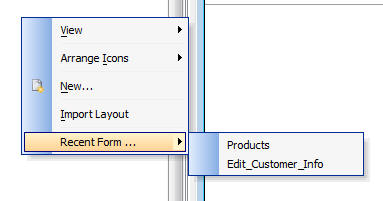

Recent Layout Menu
In a large application with many Forms, Reports, Labels, etc. it can be time consuming to find the Layout that you last edited in the list of Layouts. Now, every time you edit a Layout, Alpha Five automatically adds the Layout to a 'Recent' menu.
You can right click on the white-space in the Control Panel, or on a Layout name to bring up the 'Recent' menu.
In the screenshot below you can see that the 'Products' Form was the most recently edited Form, and prior to that, the 'Edit_Customer_Info' Form had been edited.
